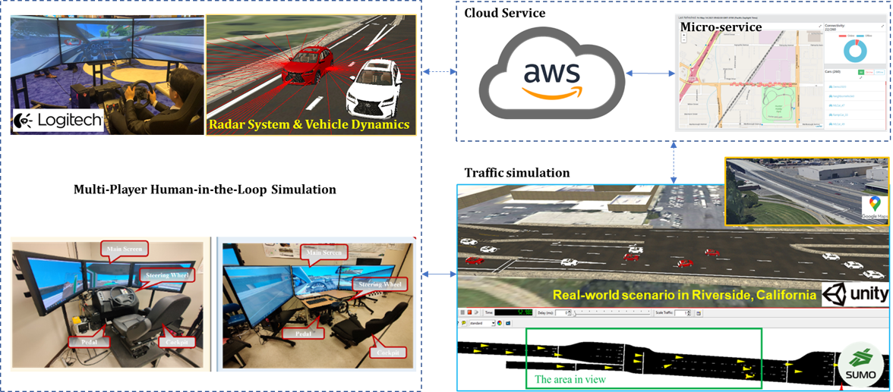

Multiplayer Human-in-the-Loop Simulation Platform
Project Overview
This platform connects multiple human participants in shared traffic scenarios. It combines SUMO background traffic with Unity vehicle dynamics and interfaces for studying interactions between human drivers and automated vehicles.

System Architecture of the Multiplayer Human-in-the-Loop Simulation Platform
Platform Demonstration
Multiplayer Human-in-the-Loop Simulation Demo
Unity-SUMO Integration for Real-time Traffic Simulation
Human-in-the-Loop Simulation Interface
Key Features
- Synchronized scenarios for multiple participants across a network.
- Integration of background traffic, vehicle dynamics, and human controls.
- Configurable traffic scenarios with driving behavior data collection.